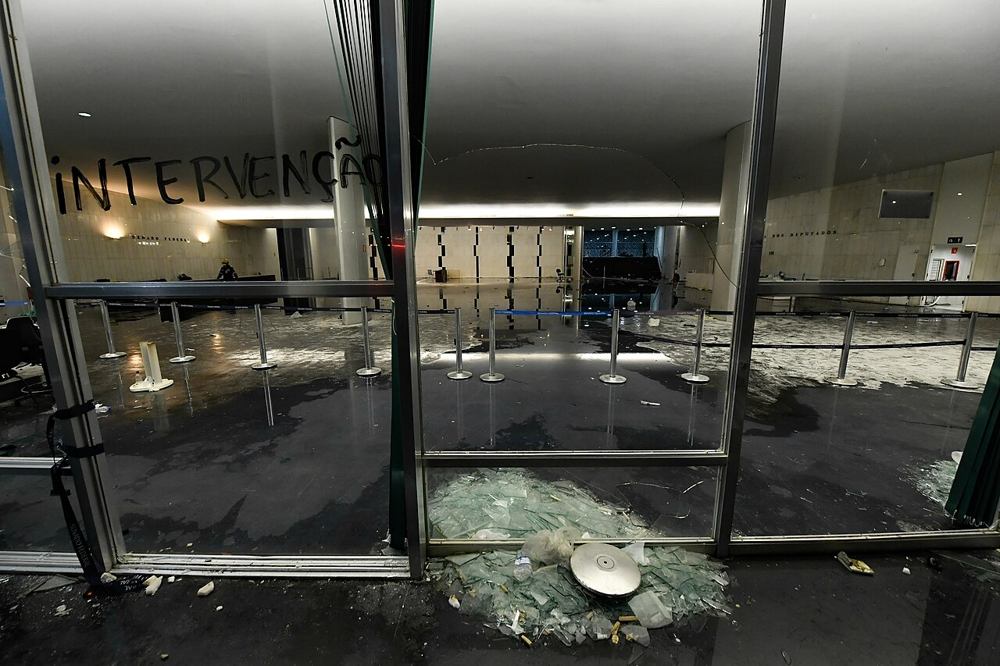
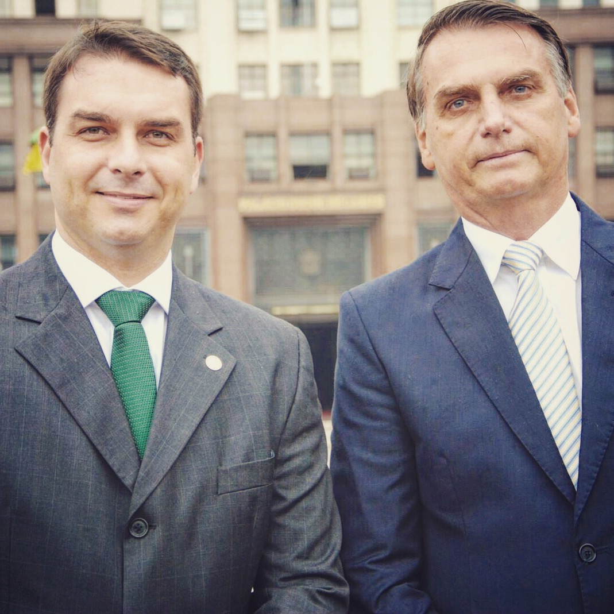
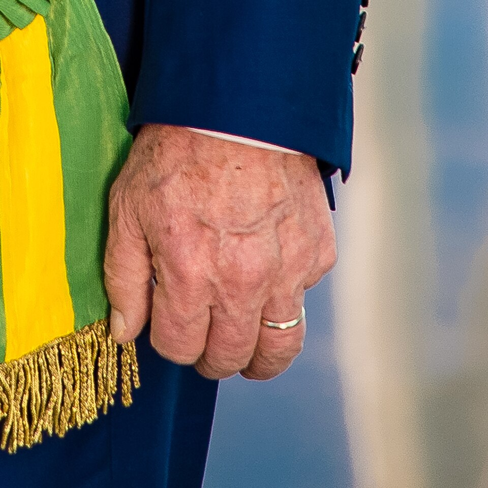

Queda menos de un mes para la primera ronda de las elecciones brasileñas el 4 de octubre y nadie duda quiénes serán los dos candidatos que se verán las caras en la segunda ronda el 25 del mismo mes. Lula da Silva busca conseguir su cuarto mandato dos días antes de su octogésimo primer cumpleaños, pero deberá vencer a Flávio Bolsonaro, hijo de su antecesor. La condena contra Jair Bolsonaro por el intento de golpe de estado de 2023 no ha acabado con las opciones del político ultraconservador y amenaza con otra elección en Latino América que se decidirá por la mínima.
La vuelta de Bolsonaro
“Con gran responsabilidad confirmo la decisión del mayor líder político y moral de Brasil, Jair Messias Bolsonaro, de confiarme la misión de continuar nuestro proyecto nacional”. Así anunció Flávio Bolsonaro su candidatura presidencial por el Partido Liberal tras recibir el apoyo de su padre. En ningún momento Flávio ha buscado distanciarse de la figura de su padre y ha llevado a cabo una campaña muy continuista con su legado.
Una de sus mayores promesas es amnistiar a todos los procesados por el Asalto a la Plaza de los Tres Poderes de 2023 y destituir a miembros del más alto tribunal de Brasil. Esperablemente también buscará beneficios penitenciarios o el indulto a su padre a quién ha descrito como víctima de lawfare.
Como gran parte de la derecha latinoamericana, uno de los temas que más ha centrado su campaña ha sido la seguridad. La agencia de la ONU estimó que, aunque llevan una década bajando, en Brasil hay alrededor de 20 asesinatos por cada 100.000 habitantes, colocando al país en el vigésimo puesto mundial. Con su plan “Brasil sin miedo”, Flavio propone la reducción de la edad de responsabilidad penal, la facilitación de obtención de armas de fuego, la castración química para agresores sexuales y la designación de toda organización criminal como narcoterrorista, lo que facilitaría la actuación de Estados Unidos en el país a través del Escudo de las Américas como otros presidentes conservadores del continente ya han permitido. Todas estas medidas punitivistas y centradas en un hombre fuerte sobre las que Flávio ha basado toda su carrera política causan preocupación en sectores de la población debido a la conocida apología del político hacia la dictadura militar: “En aquella época había seguridad, había salud, educación de calidad, había respeto. Hoy en día, ¿a qué tiene derecho una persona? A votar. Y aún así vota mal".

Entrada al Congreso Nacional destrozada tras el asalto del 8 de enero de 2023
Autor: Agência Senado
A pesar de compartir las posiciones explícitamente homófobas y antifeministas de su padre, el candidato presidencial no ha hecho de ellas la principal bandera de su campaña. Aunque durante su campaña moderó el mensaje, Jair Bolsonaro afirmó que “con las liberalidades, las drogas y las mujeres trabajando aumentó bastante el número de homosexuales” y que “no podemos permitir que los niños se vuelvan homosexuales en el futuro”. Por el contrario, Flávio parece haber querido evitar esta clase de titulares y ha querido centrarse en la violencia en Brasil para buscar un perfil más moderado.
Lo que todo el mundo parece tener claro es que el encanto de Flávio no viene por su proyecto político, sino por ser el heredero de Jair. Consecuentemente, es probable que entre 2018 y 2022 ya viéramos un adelanto de lo que sería su presidencia: mano dura contra el crimen, fortalecimiento de la autoridad, negacionismo del cambio climático, desprotección de los pueblos indígenas, liberalización de la economía y disminución de la financiación de los aparatos públicos. Sin embargo, Flávio se ha visto envuelto en numerosos problemas con los que su padre no tuvo que lidiar.
Camino al Palacio de la Alvorada
El nombre de Flávio Bolsonaro empezó a escucharse para la carrera presidencial desde el momento en el que su padre fue condenado con una inhabilitación política. A pesar de ser una figura muy popular en el Partido Liberal, no era el único Bolsonaro en las quinielas. Michelle Bolsonaro, actual esposa de Jair Bolsonaro y madrastra de Flávio, se barajó como la nueva candidata presidencial gracias a su tiempo como Primera Dama y su popularidad entre el electorado femenino. Sin embargo, como explicó Flávio en su presentación, Jair seleccionó a su hijo para sucederle y, aunque inicialmente no pareciera que los enfrentamientos entre ambas figuras con aspiraciones presidenciales hubieran sido importantes, el 30 de junio Michelle dimitió de todos sus cargos en el partido. Una semana antes había publicado un video en el que acusaba a su hijastro de haberla maltratado y humillado y afirmó que sintió su actitud como una puñalada. Esta colisión tan directa en el seno de la organización impactó fuertemente al Partido Liberal y ambas figuras tardaron un mes en enmendar lazos públicamente después de una disculpa de Flávio.

Flávio (izq) junto a su padre Jair (dcha)
Fuente: Jair Messias Bolsonaro
Sin embargo, un nuevo desencuentro con su madrastra es actualmente el menor problema para Flávio. El 11 de septiembre la Policía Federal confirmó que estaba investigando al candidato presidencial por sospechas de lavado de dinero durante la producción de la película Dark Horse. Este biopic cuenta la campaña presidencial que llevó al poder a Jair Bolsonaro y el intento de asesinato que sufrió en ella. La familia Bolsonaro ha estado directamente involucrada en esta película incluyendo en la búsqueda de productores y es la obtención de 61 millones de reales por parte de Flávio lo que causó el escándalo. Según las investigaciones, el origen de esa cantidad de dinero que convierte a Dark Horse en una de las mayores producciones de la historia de Brasil es Daniel Vorcaro, banquero investigado por fraude. Inicialmente el candidato negó conocer al banquero, pero audios y mensajes le forzaron a desdecirse y aumentaron las sospechas de tráfico de influencias o de la financiación de la estancia en Estados Unidos de su hermano Eduardo Bolsonaro, huído por una condena relacionada con el intento de golpe de estado.
La cercanía con el banquero que dejó un agujero de 50.000 millones, incluyendo en fondos públicos de pensiones, ha dañado la imagen del candidato presidencial. Lo que hasta entonces era una carrera de iguales se convirtió en una victoria casi asegurada para Lula. Sin embargo, la campaña y la colaboración de Michelle ha permitido al político brasileño recuperar gran parte del terreno perdido y a poco tiempo de las elecciones la ventaja del oficialismo es mínima. Pero de todo, quizás lo que debería asustar más a Lula es que esta historia ya la hemos visto antes.
La sombra de Trump
En la oficialización de la candidatura de Flávio Bolsonaro pudimos ver al presidente de Argentina Javier Milei. El presidente de Colombia Abelardo de la Espriella, el primer ministro israelí Benjamin Netanyahu y el líder de Vox también han mostrado todos su apoyo al candidato liberal. Sin embargo, todos los ojos apuntan hacia el mismo lugar, el presidente de los Estados Unidos Donald Trump.
La afinidad de Donald Trump por la familia Bolsonaro no es ningún secreto. Durante la presidencia de Jair Bolsonaro, Brasil se acercó a Estados Unidos mientras se alejaba de los rivales del país norteamericano, el presidente visitó Mar-a-Lago e incluso se propuso una adhesión a la OTAN. Ambos mandatarios compartieron constantes alabanzas y en 2020 Bolsonaro replicó la teoría del fraude electoral en las elecciones presidenciales estadounidenses. De forma similar, Bolsonaro se exilió a Florida, gobernada por el ultraconservador Ron DeSantis, tras el intento de golpe de estado en Brasil y permaneció ahí hasta que los demócratas forzaron su salida durante la presidencia de Biden. Una vez de vuelta en la presidencia, Donald Trump sancionó al juez encargado de investigar el golpe de estado (quien también había bloqueado X en el país) y denunció la condena del expresidente como persecución política. Además, Brasil ha sido uno de los países con los que el segundo gobierno de Trump ha tenido más encontronazos diplomáticos y que más se ha visto afectado por los aranceles (llegando estos a alcanzar el 50%). Hace pocos meses Donald Trump recibió a Flávio en la Casa Blanca para reafirmar su empeño en que la familia Bolsonaro vuelva a la presidencia brasileña.

Mano izquierda de Lula da Silva
Fuente: Palácio do Planalto
Pero más allá de la cercanía de ambas dinastías, los paralelismos son obvios. Ya en 2017 la gente apodaba a Jair Bolsonaro como el “Trump brasileño” y el ex-presidente nunca se negó a seguir sus pasos. Impugnó su derrota en las elecciones, incentivó un asalto a las instituciones para impedir el pacífico traspaso de poderes y ha sido condenado por ello. Sin embargo, Donald Trump también estaba envuelto en numerosos problemas judiciales antes de las elecciones de 2024. El actual presidente fue encontrado culpable de violación, de fraude, de falsificación documental y fue investigado por retener documentos clasificados en su residencia, por crimen organizado y por incitar a una insurrección. Ninguno de estos escándalos impidió su reelección.
Si la historia se repite, los problemas judiciales de los Bolsonaro no serán un impedimento en su potencial victoria y de ganar cumplirá sus promesas: amnistía para los golpistas y un estado más autoritario y desinhibido que en la primera legislatura. Lula debería ser el primer preocupado: ya estuvo en la cárcel tras ser condenado por un ministro de Bolsonaro en lo que la ONU catalogó de un juicio no imparcial. Aunque finalmente se le absolviera de todos los delitos, el actual presidente brasileño es consciente de lo que se juega el país con un Bolsonaro de nuevo en el Palacio de la Alvorada.